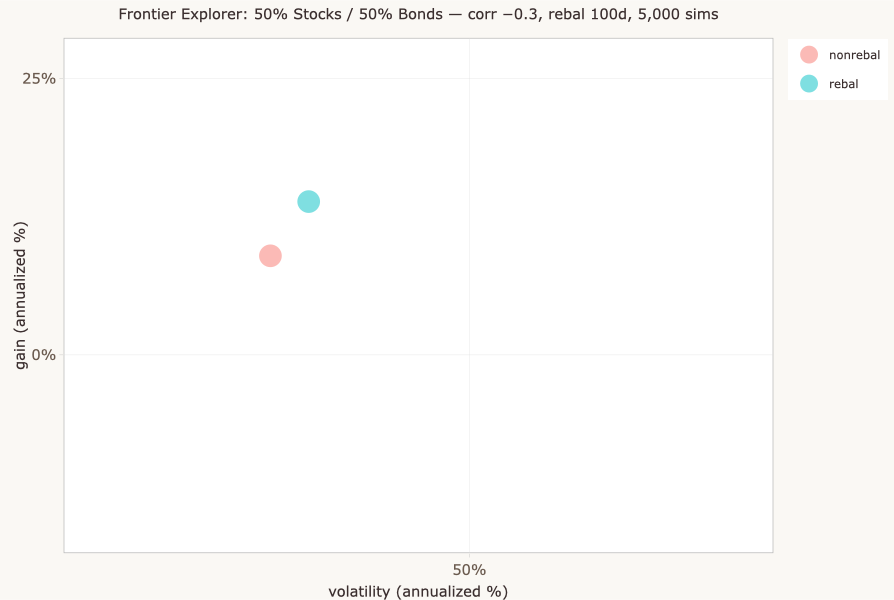
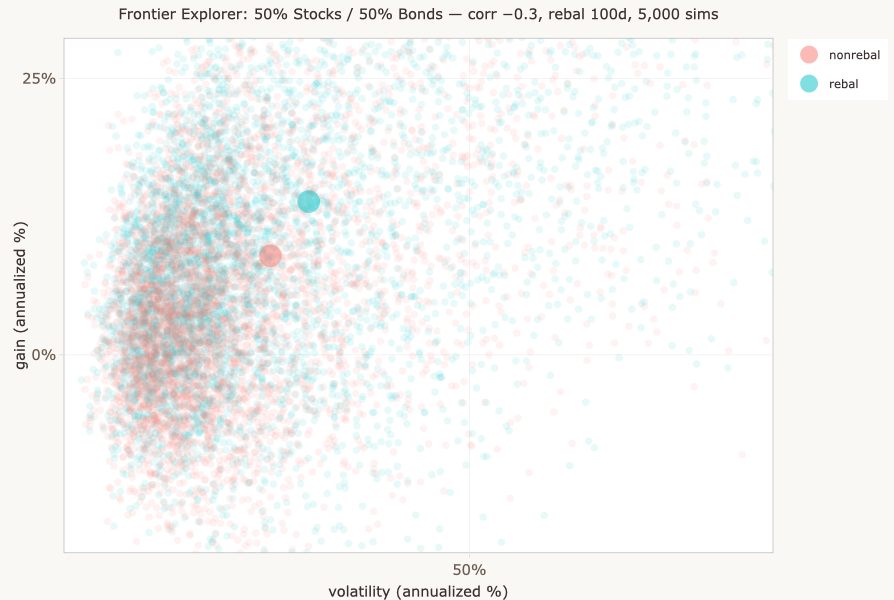
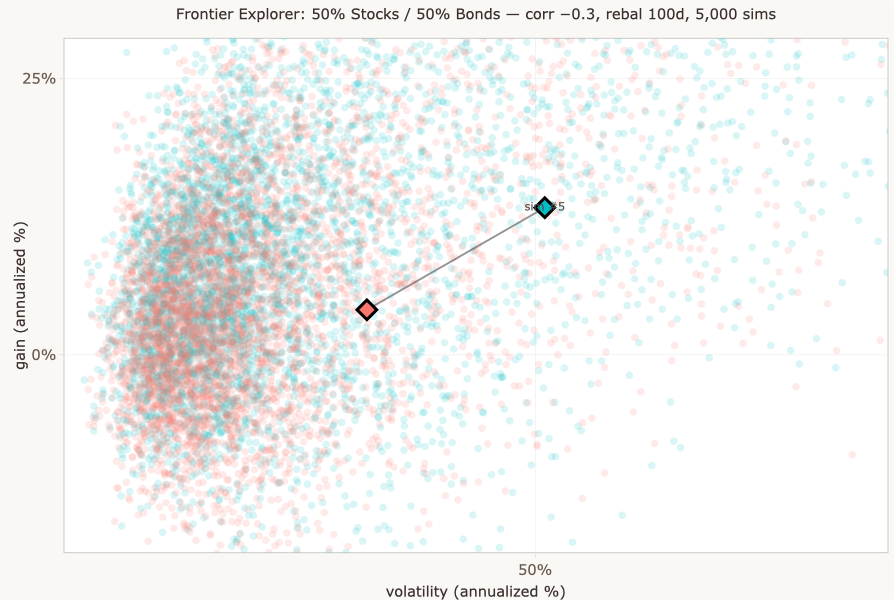
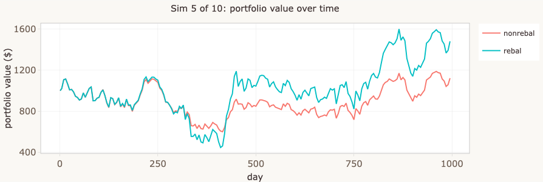
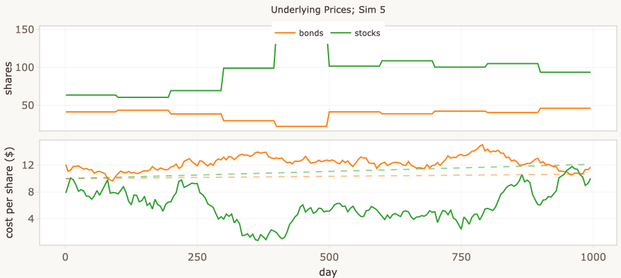
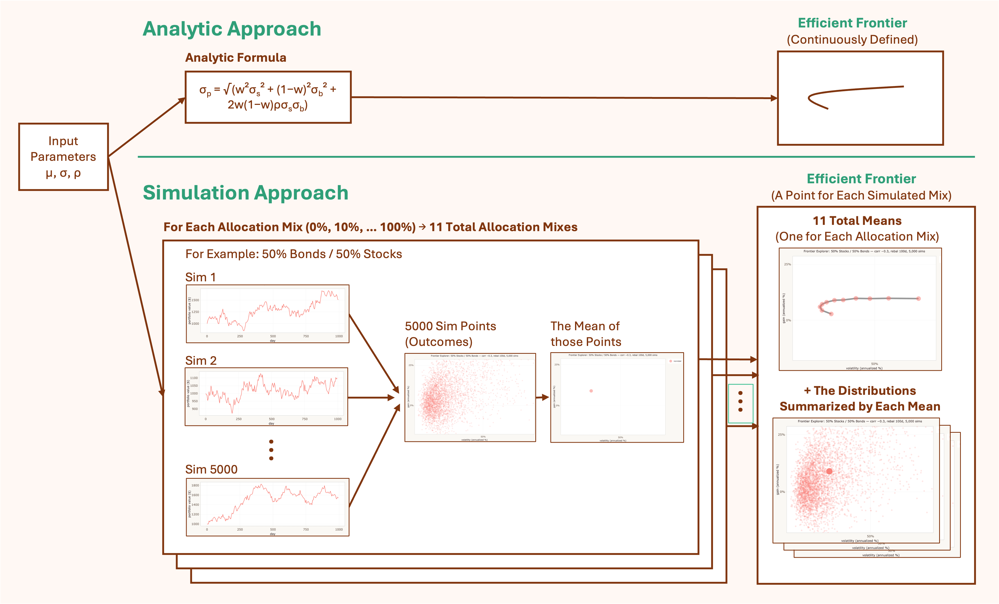
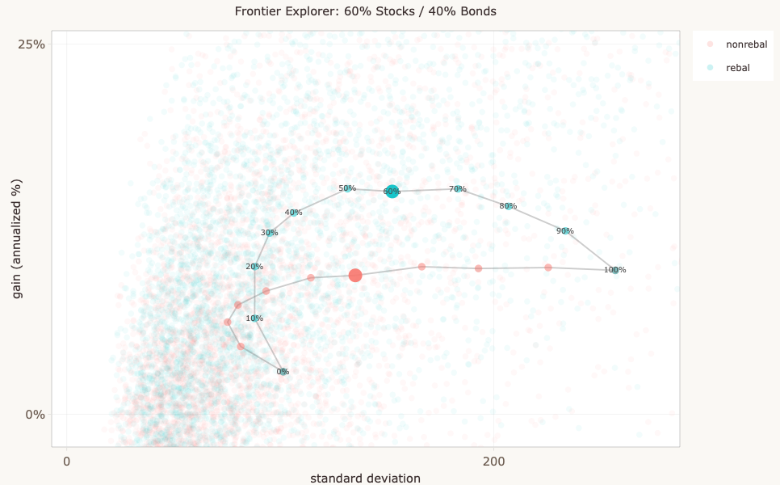

A Monte Carlo exploration of stock/bond portfolios — what rebalancing actually does, and why the efficient frontier is more complicated than it looks.
For readers who want the thesis without the full text. Each point links to the section that develops it.
Distributions, not point estimates.
Most financial projections give you a single number. Any one such number
is a draw from a wide distribution — and the spread is often more
important than the center.
→ Why I built this
The frontier is a centerline, not a ceiling.
The efficient frontier is standardly described as “the best achievable
return at each level of risk.” But it's a curve through expected
values — individual outcomes scatter widely above and below it.
→ The efficient frontier
The textbook frontier and the simulator's frontier are different objects.
The classical frontier is a constant-weight, single-period construction
with no time axis. The simulator's frontiers are multi-period and
path-dependent. They share vocabulary by historical accident, not by
mathematical equivalence.
→ The efficient frontier
Rebalancing can beat staying all-in on the highest-return asset.
In a multi-period world, periodic rebalancing forfeits drift gains,
locks in variance drag at the current allocation, and harvests mean
reversion between assets. The balance of these effects can produce a
rebalanced portfolio whose average terminal return exceeds that of
100% stocks — even when stocks have the higher expected return.
This is invisible in the single-period framework.
→ When a mixed portfolio beats pure stocks
I've long been skeptical of financial projections that give you a single number — "at 7% annual return, your $10,000 grows to $76,000 in 30 years." That figure isn't wrong exactly, but it papers over an enormous amount of uncertainty. Real markets don't move at a steady 7%. They lurch, recover, crash, and surge, and the path matters as much as the average.
I wanted to see the distribution of outcomes, not just the expected value. Building a simulation from scratch forced me to be precise about my assumptions and gave me something I could actually poke at.


Each simulation generates a single set of correlated price paths, but produces two dots on the Gain vs Volatility plot — one for the rebalanced strategy and one for the non-rebalanced strategy, each with its own annualized gain and standard deviation. It's tempting to treat these as abstract data points, but each pair represents a complete simulated history: a thousand days of correlated price movements, portfolio rebalancing events, and compounding returns. The Single Sim Explorer tab lets you open up any simulation and see the machinery inside.


The Single Sim Explorer's three panels:

Every pair of dots on the Gain vs Volatility plot has a story like this behind it.
The simulator is a teaching tool, not a predictive model of real markets. The key simplifications:
Despite these simplifications, the qualitative patterns — wide distributions, the costs and benefits of rebalancing, the shape of the frontier under multi-period dynamics — hold up under more realistic assumptions, even though the specific numbers wouldn't.
The simulator does model correlation between stocks and bonds, which is a genuinely important factor. Decorrelation is a key source of diversification benefit, and the scenario matrix on the Frontier tab lets you compare precomputed results across five correlation levels and three rebalancing intervals.
Each stock/bond mix produces a distribution of outcomes — many possible gains and risks, depending on how prices actually move. Summarize each distribution by two numbers: its mean gain and its mean SD. Plot those summary points on a chart, with mean SD on the horizontal axis and mean gain on the vertical. The result is one point per mix.
Most of those points are dominated: there's some other mix whose summary point shows higher mean gain at the same mean SD, or lower mean SD at the same mean gain. The efficient frontier is the curve formed by the points that aren't dominated.
A note on optimization: in the general N-asset version of the efficient frontier, choosing the non-dominated portfolios is a real optimization problem — there are many possible weight vectors at each risk level, and you have to find the best one. In the two-asset case (stocks and bonds, as in this simulator), this collapses: each stock/bond split is its own unique portfolio, so the frontier is just the curve traced by sweeping the allocation from 0% to 100% stocks. No optimization is needed; the curve is computed directly.
A second subtlety: the textbook frontier is a constant-weight construction. There's no time axis, so weights don't drift and no rebalancing action is needed — constant weights are just stipulated. The simulator, by contrast, runs over time, and there constant weights have to be maintained by an action: periodic rebalancing. That action has consequences the textbook version doesn't account for (it locks in variance drag, forfeits drift, and harvests mean reversion), which is why the simulator's rebalanced curve doesn't simply reproduce the textbook frontier. The next section walks through what changes.
In the simulator, the Frontier tab shows both views: Just the means shows the frontier as point estimates (each dot is the mean gain and mean SD across all simulations for one stock/bond split), and Means + clouds shows the full distributions from which those point estimates are derived.
Use the interactive widget below to explore how the textbook frontier — the single-period constant-weight version — responds to changes in correlation, returns, and volatility. The simulator builds something different (multi-period, terminal-wealth), and the next section walks through where the two pictures part company.
The frontier shown uses the standard two-asset portfolio variance formula: σp = √(w²σs² + (1−w)²σb² + 2w(1−w)ρσsσb). It's a single-period, analytic construction: no compounding, no drift across periods, no path-dependence. Think of it as the textbook picture against which the simulator's multi-period results are a contrast.
The widget above uses “SD” to label the standard deviation parameter of single-period returns — a number you set as a model input. The simulator's plots use “volatility (annualized %)” on the x-axis, which is the standard deviation of realized returns computed from the simulated price paths, annualized and expressed as a percentage. These are related but not identical:
In other words, the widget shows the textbook idealization where SD is a parameter you stipulate. The simulator shows the realized volatility that emerges from actually running the system. Both are “standard deviation of returns” in a meaningful sense, but they live in different parts of the pipeline.
The math. For independent, identically-distributed log-returns over discrete time periods, the variance of the total log-return over N periods is N × σ²period. Standard deviation scales with the square root:
σannual = σperiod × √Tyear
where Tyear is the number of periods in a year — whatever you take a period to mean. The two quantities converge on the same thing (the annualized SD of returns) once you fix that interpretation.
A worked example: if you adopt the “Interpreting days” heuristic that one timestep is roughly one trading day, then Tyear ≈ 252 and the annualization factor is √252 ≈ 15.87. Under that interpretation, the widget's σperiod = 6 corresponds to σannual ≈ 95 in the same units.
This is the textbook scaling. In practice the simulator's realized volatility won't match the prediction exactly. The Metropolis-Hastings price model and the conversion from prices to returns introduce additional scaling that the simple √T relationship doesn't capture. The structural relationship holds (variance accumulates linearly, SD scales as √T), but the specific numeric correspondence between widget parameter and simulator output depends on both the timestep interpretation and the engine's internals.
The textbook efficient frontier is computed in one step from a closed-form formula: plug in expected returns, volatilities, and correlation, and out comes a curve. The simulator takes a different path. For every allocation, it generates hundreds or thousands of simulated price trajectories, computes the outcomes for each, aggregates them into a cloud of points, takes the mean of the cloud, and plots that mean. Repeat for the next allocation. Repeat across scenarios. It's enormously more work for what often looks like a similar answer.

Both pipelines start from the same input parameters. The analytic version reaches the frontier in one step. The simulator passes through three intermediate objects on the way: the price trajectories that simulate possible futures, the cloud of outcome points those futures produce, and the mean of the cloud that becomes a single plotted point.
Both approaches produce a frontier curve. The difference is in what gets carried along the way:
| What's preserved | Analytic (textbook) | Simulator |
|---|---|---|
| Distribution of outcomes | Collapsed to mean | Full distribution per allocation |
| Time dimension | None — single period | Multi-period compounding |
| Rebalancing | Stipulated (constant weights) | Action with consequences |
| Variance drag | Implicit only | Explicit in realized paths |
| Extensibility | Limited to closed-form cases | Add transaction costs, regime shifts, etc. |
| Speed | Instantaneous | Slow (minutes for full sweep) |
| Statistical noise | None — exact | Monte Carlo error |
| Transparency | High — see inputs → output | Lower — must inspect simulations |
None of this means the analytic approach is obsolete — quite the opposite. Closed-form solutions are exact (within their assumptions), fast to compute, and transparent in a way simulation outputs aren't: you can see how the answer depends on each input, which often is the insight. They compose with other analytic results in ways simulations don't, making them the natural building blocks for optimizers and risk tools. And they provide the baseline a simulation needs to be checked against — without a closed-form answer for the constant-weight single-period case, you'd have no way to know whether your simulator was converging, biased, or just noisy.
Analytic and simulation aren't substitutes; they're complementary, and a serious analyst usually wants both. The simulator extends the analytic picture into territory the formulas can't reach — multi-period effects, rebalancing as action, the distribution of outcomes — but it does so on a foundation the analytic framework provides. The interesting cases are where the two diverge: where rebalancing's locked-in variance drag pulls a frontier into shapes the textbook version can't represent, where the cloud of outcomes is so wide that the frontier dot becomes a misleading summary, where the action of maintaining constant weights costs something the stipulation of constant weights doesn't acknowledge. Those are the cases the simulator is built to surface, and where the analytic framework — through no fault of its own — runs out of resolution.
At certain parameter settings — particularly with negative correlation and asymmetric assets — a rebalanced portfolio with some bond exposure produces a higher average terminal gain than 100% stocks, even though stocks have the higher expected return. The screenshot below shows this with correlation = −0.7, where stocks are more volatile (SD 6) and higher-returning than bonds (SD 3).

Variance drag. If an investment gains 20% and then loses 20%, you don't end up back where you started — you're at 96¢ on the dollar. Gain 50%, lose 50%, and you're at 75¢. The more volatile the path, the wider the gap between the arithmetic average return and the actual compound growth. This penalty is called variance drag (or volatility drag), and its magnitude is roughly ½σ² — half the variance of returns per period.
Why a mixed portfolio can beat 100% stocks. Three effects are happening simultaneously when you compare a rebalanced mixed portfolio to 100% stocks:
When the second and third effects together exceed the first — when the drag reduction plus harvesting premium more than compensates for the lower expected return — the mixed portfolio beats pure stocks on average terminal wealth. This is most likely when bonds are meaningfully decorrelated from stocks (so the variance reduction is large) and when both volatility and the harvesting opportunity are present (so the premium is meaningful). At 100% stocks all three effects vanish simultaneously, which is why the rebalanced and non-rebalanced curves meet there.
The textbook vs. the sim. The classic Markowitz frontier has no time dimension — no compounding, no drift, no path. The result above can't appear in that framework, because the framework can't represent it.
Sanity check. When rebalancing is disabled entirely (rebalance interval longer than the time horizon), both the “rebalanced” and “non-rebalanced” curves collapse to identical — verified across every allocation, every simulation, zero difference. This confirms the divergence comes entirely from the rebalancing mechanism, not from a code artifact.
The tradeoff. Rebalancing is a trade: it captures the rebalancing premium (systematic sell-high/buy-low) but pays variance drag every period and forfeits the drift premium (letting winners run). Where that balance tips depends on correlation, volatility, and horizon — all subject to the simplifications discussed in “What this is — and isn't” above. In particular, the plot above assumes a constant stock/bond correlation of −0.7. Actual correlations vary constantly — and rarely are that decorrelated. The simulator's Frontier tab lets you compare precomputed frontiers across a range of (constant) correlations and rebalancing intervals, so you can see how the shape changes as assumptions shift.
Stock and bond prices follow a random walk generated by Metropolis-Hastings sampling. At each time step, a new price is proposed from a multivariate normal centered on the current price. The proposal is accepted or rejected based on the ratio of target densities, producing correlated price paths that respect the specified distribution parameters.
| Parameter | What it controls |
|---|---|
| Simulations (n) | Number of independent runs. Frontier sweep needs n ≥ 500 for a reasonably clean curve. |
| Time horizon (days) | Length of each run. ~1 trading day per step with default settings. |
| Stock allocation (%) | Target stock percentage. Bonds hold the remainder. Disabled in frontier sweep mode. |
| Rebalance interval | How often (in days) the portfolio resets to target allocation. |
| Volatility (SD) | Price distribution standard deviation per asset. Higher = more volatile. |
| Stock–bond correlation | How closely the two assets move together. Negative = more diversification benefit. |
| Interest rates | Compound growth rates per interest period, independent of price volatility. |
Written in R using Shiny, deployed on shinyapps.io and embedded via iframe. Plots rendered with ggplot2 + plotly. Source code on GitHub.